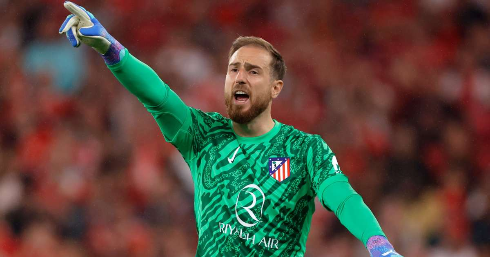

Campió de LaLiga 24/25
FC Barcelona s'ha proclamat campió de la temporada 24/25 amb un gran rendiment col·lectiu i solidesa defensiva.
FC Barcelona s'ha proclamat campió de la temporada 24/25 amb un gran rendiment col·lectiu i solidesa defensiva.
Kylian Mbappé(Real Madrid) ha estat el màxim golejador amb 29 gols, destacant per la seva velocitat i finalització.

Lamine Yamal (Fc Barcelona) ha liderat les assistències amb 13 passades de gol, sent clau en l'atac del seu equip.

Jan Oblak (Atletico de Madrid) El porter de l’Atlètic de Madrid ha estat el millor porter de LaLiga 24/25, amb la menor mitjana de gols encaixats per partit.
